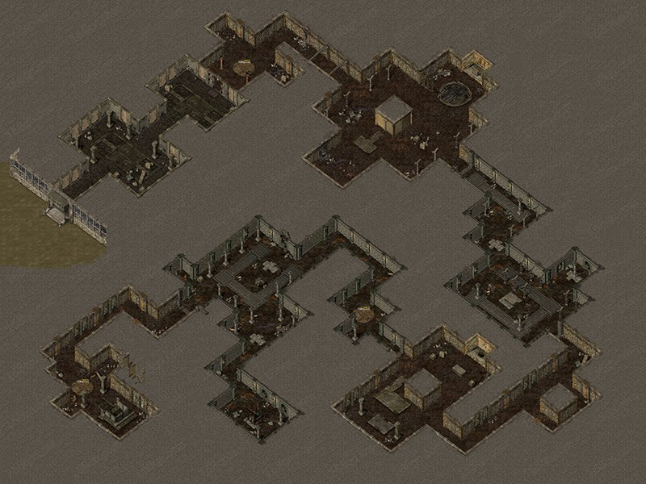

帝王陵介绍
副本介绍
帝王陵里聚集了大量的东瀛忍者，他们在帝王陵盗取了大量各种宝物，
建议大家组队前往，具体规则如下：
进入条件：30岁以后可以进入，40岁之前需要桂林符，40岁之后可免费进入
（桂林符所需材料：熊胆*3、犀牛角*3、老虎指甲*3，然后找雨中客兑换桂林符）
开启时间：每小时的正点可进入，5分钟后关闭入口（以服务器时间为准）
二层开启：当帝王陵一层的怪物全部清除后，可进入二层
玩法：二层帝王陵分布了五个宝盒，分别为龙袍盒子、新罗盒子、桂林竹枪盒子、
磐龙盒子，并有五名忍王守护。
|  |
 |
| 帝王陵一层 |
帝王陵二层 |
狐狸洞介绍
副本介绍
狐狸洞里聚集了大量的妖狐，他们身上有可兑换狐族神器的必备材料,
建议大家组队前往，具体规则如下：
进入条件：40岁以后并需要神话境界（480元气）
开启时间：每半小时的正点可进入，5分钟后关闭入口（0-5分；30-35分，以服务器时间为准）
二层进入：在一层找到正确的机关门即可进入（正确的机关门每隔一段时间随机轮选一次）
玩法：二层妖华由死狼女实体看守，使用狐狸内丹找妖华可兑换狐族神器，
击杀妖华可使长城以南的九尾狐酒母变身。
通过收集99朵白玫瑰来换取狐狸内丹，妖华处可以将狐狸内丹兑换成随机妖华系列装备
 |
 |
| 狐狸洞一层 |
狐狸洞二层 |